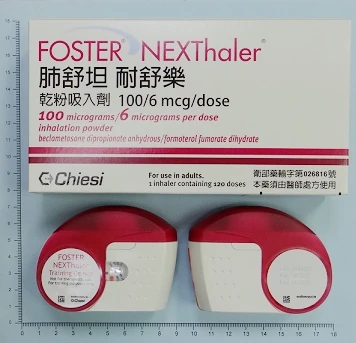

吸入藥物教學 ／ NEXThaler 乾粉吸入劑
肺舒坦耐舒樂乾粉吸入劑
Foster nexthaler 100/6 mcg/dose

藥盒與吸入器外觀。出處：光田綜合醫院
教學影片
標題：NEXThaler 使用教學
提供：為恭醫院藥劑部
使用步驟
NEXThaler 是呼吸啟動的乾粉吸入器，記住「打開 → 吸氣 → 關上」，並留意打開與吸氣時的兩聲「ㄎ一ㄚ」。
- 準備：直立握住吸入器，確認保護蓋完全關上。檢查劑量計數器，顯示 1～120 代表還有藥。
- 打開（第一聲「ㄎ一ㄚ」）：將保護蓋完全打開，直到聽到聲響，表示劑量已準備好。
- 吐氣：遠離吸入器，盡量把氣吐乾淨；不要對著吸入器吐氣。
- 吸氣（第二聲「ㄎ一ㄚ」）：嘴唇含住吸入口並密封，不要用手遮住側面通氣孔。快速、用力深吸一口氣；吸氣過程中可能聽到或感覺到聲響，表示藥物已釋出。也可能感覺到淡淡的甜味，這是正常的，因為含少量乳糖。
- 屏氣：把吸入器從嘴巴拿開，屏氣 5～10 秒或以舒適為限，再慢慢吐氣，不要對著吸入器吐氣。
- 關上：將吸入器擺回直立，完全蓋上保護蓋，確認劑量計數器減少 1。
- 漱口：用清水漱口或刷牙後吐掉；本藥含類固醇，這樣可減少口腔念珠菌感染的風險。
防呆機制重點：兩聲「ㄎ一ㄚ」
- 第一聲：打開蓋子時的聲響，表示劑量已備妥。
- 第二聲：用力深吸時可能聽到或感覺到的聲響，表示藥物已釋出；請繼續深吸。
若只打開蓋子卻沒吸藥就蓋上，藥物會退回儲存槽，計數器不會減少，也不會累積成雙倍劑量。
若依醫囑需要第二劑，建議間隔 30 秒～1 分鐘後再重複步驟。新開封前若保護袋破損、計數器為 0，或吸入器受損，請勿使用並更換新品。
若不確定劑量計數器是否減少，不要自行補吸；請依原定時間使用下一劑，並詢問醫師或藥師。
常見錯誤
- 蓋子沒有完全打開。
- 對著吸入器吐氣。
- 用手擋住通氣孔。
- 吸氣不夠用力或忘記用完漱口。
- 沒有留意兩聲「ㄎ一ㄚ」：吸氣時也可能是感覺到聲響；請確認計數器是否減少，不確定時請詢問醫師或藥師。